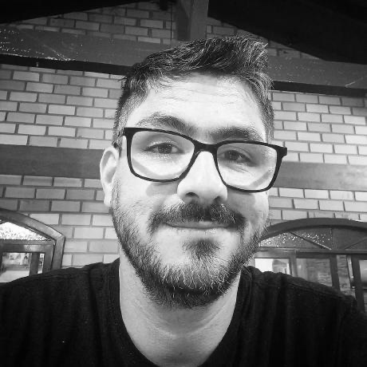

InCuca
Product Designer e UX Engineer
Liderança técnica da squad. Design system do zero, auditoria de 117 blocos Gutenberg para CLS e LCP e ADRs no monorepo.

Staff Design Engineer e Tech Lead. Design, branding, código, segurança e liderança técnica, do Figma à produção.
Ver casesTrabalho onde branding, copy, design e tecnologia se encontram. É ali que muita coisa dá errado quando ninguém assume a interseção. Meu papel é transformar complexidade em sistemas claros, coerentes e funcionais, conectando produto, experiência e negócio.
sendo o braço direito e com o voto de confiança de empresas, primeiro como CLT e depois como PJ, entregando design, branding e front-end engineering para grandes marcas nacionais e internacionais.
projetos entregues no dsbdigital studio, entre 2016 e 2024.
de faturamento mensal da Dom Sorriso, rede de clínicas odontológicas, que estava em R$ 80 mil. Reposicionamento e growth.
Marcas que atendi pela NacionalVOX, como designer, diretor criativo e desenvolvedor front-end. O que muda é o briefing. O jeito de decidir, registrar e entregar é o mesmo. Buscando sempre a excelência, elevando a marca ao próximo nível.
Onde eu era o responsável pelo produto, pela marca ou pelo estúdio.
Em breve. Estou montando os cases com calma.
Liderança técnica da squad. Design system do zero, auditoria de 117 blocos Gutenberg para CLS e LCP e ADRs no monorepo.
Redesign completo do Falar Bem Conecta, com design system próprio. UX de uma fintech americana de análise de contratos.
Design system e tipografia proprietária para mais de 10 sub-marcas. Streaming, CRM/ERP próprio e segurança dos servidores.
Estúdio boutique de design de alto nível e engenharia front-end. Mais de 600 projetos, do conceito à produção.
Interfaces, direção de arte e front-end para marcas de montadoras premium a instituições da indústria e do comércio.
Comecei testando jogos. Anos depois, atendi a Hoplon pela NacionalVOX e fiz o front-end de um dos projetos deles.
Ferramentas próprias, nascidas de problemas que encontrei no trabalho. Desenho a interface e escrevo o código.
Ver o que está na bancada do labPonte entre agentes de IA e a Plugin API do Figma, com verificação independente pela REST API.
Canvas infinito para planejar a arquitetura de sites, com crawler e auditoria de SEO por IA rodando por linha de comando.
WhatsApp e CRM de leads com funil de vendas e ROI por campanha. Chat em tempo real e links rastreáveis.
Todo projeto meu deixa rastro: o que foi decidido, por quê, e o que ficou de fora. Isso vale para o time que herda o trabalho e para mim daqui a seis meses.
Output se regenera em minutos. Contexto curado e decisão registrada, não.
Registro.
Mapa.
Prosa.
A prosa nunca é a fonte da verdade. O registro é. O resto se gera a partir dele.
Segurança no front-end.
Pixel perfeito não pode custar dados nem performance.
Uma série de ebooks sobre trabalhar com IA sem perder o porquê. Cada conceito aponta para um arquivo real de um projeto real. Em produção.